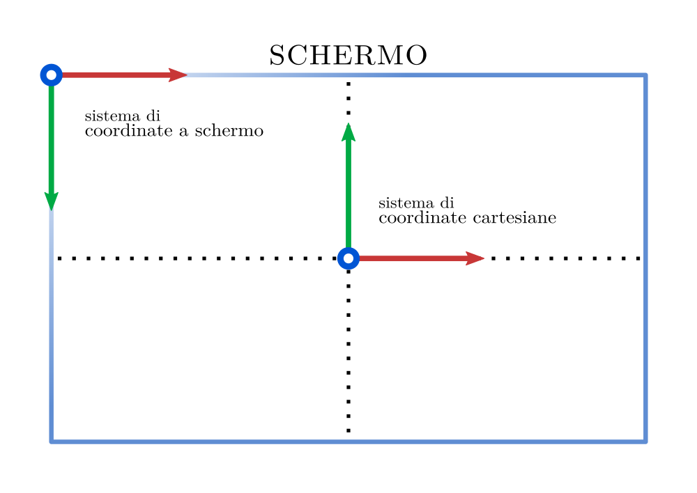
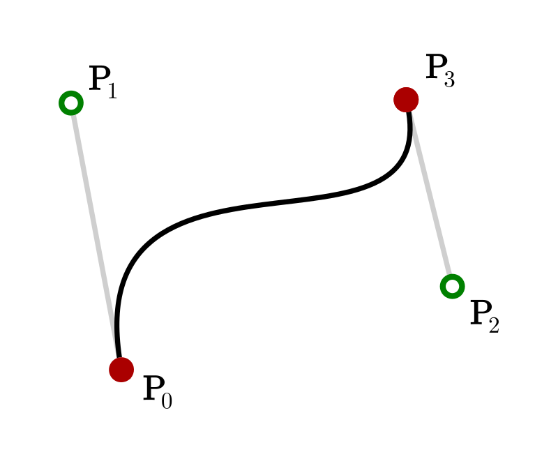
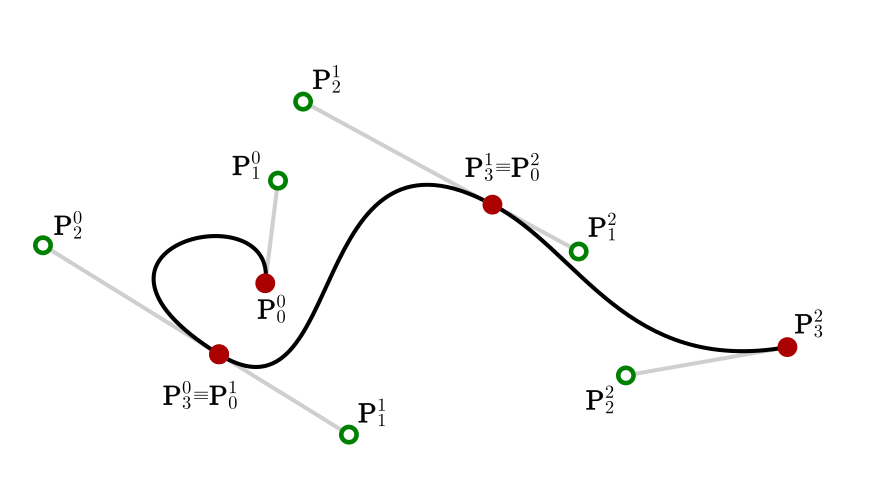

Capitolo 3 Software
Questo capitolo è dedicato ad una discussione dettagliata di alcune delle più interessanti tecniche informatiche e dei programmi impiegati nella realizzazione della presentazione e delle animazioni.
Il codice è interamente disponibile su GitHub.
3.1 Animazioni
Le animazioni sono scritte in JavaScript e integrate in una pagina HTML. Per facilitare e velocizzare lo sviluppo, ho fatto ampio uso di p5.js, una libreria grafica open source per il creative coding, che offre una varietà di funzioni per la rappresentazione di costruzioni geometriche, il rendering e la manipolazione del DOM.
Ho inoltre implementato diverse funzionalità per ottimizzare la gestione di alcuni aspetti delle animazioni.
3.1.1 Sistema di coordinate
Data la peculiarità del sistema di coordinate a schermo utilizzato da p5.js (contraddistinto dall’origine posizionata nell’angolo in alto a sinistra dello schermo e dall’asse \(y\) invertito, come schematizzato in figura) si è reso necessario trovare un metodo per gestire la conversione in sistema di coordinate cartesiane. Quest’ultimo viene centrato e scalato in base all’altezza e alla larghezza della finestra contenitore e riconfigurato al ridimensionamento della stessa.

La funzione toCartesian - responsabile della conversione da coordiate a schermo a coordinate cartesiane - tiene conto della dimensione della finestra, informazione contenuta in descaleFactor, e della posizione del centro della finestra:
function toCartesian(x, y) {
let cx = (x - xOrigin) * descaleFactor;
let cy = (yOrigin - y) * descaleFactor;
return createVector(cx, cy);
}Lo stesso vale per la funzione inversa, che converte le coordinate cartesiane in coordinate a schermo:
function toScreenCoord(x, y) {
let sx = x * scaleFactor + xOrigin;
let sy = yOrigin - y * scaleFactor;
return createVector(sx, sy);
}3.1.2 Barra del progresso
La barra del progresso (o progress bar) è un importante strumento di accessibilità e restituisce un feedback in merito al progresso possibile nell’interazione da parte dell’utente con l’animazione. La barra è posizionata sul lato destro dello schermo e monitora il comportamento dell’utente, attivandosi solo durante un’interazione e scomparendo dopo qualche secondo, per non interferire con il resto dell’animazione.
È inoltre accompagnata da un’icona di un mouse, da me disegnata, che comunica all’utente, con delle apposite frecce pulsati, le azioni possibili.
3.1.3 La serie di Fourier
Per rappresentare la serie di Fourier di una funzione periodica \(f(t)\) occorre definire con precisione la funzione - in modo che sia anche semplice da replicare graficamente - e calcolarne i coefficienti di Fourier.
3.1.3.1 Polybézier
Il mezzo ideale per definire la funzione \(f(t)\) si è rivelato essere la polybézier.
Una polybézier, o curva di Bézier composta, è una curva di Bézier definita a tratti e continua, vale a dire una concatenazione di curve di Bézier. In particolare, si prenderà in esame il caso di una concatenazione di curve di Bézier cubiche, ovvero il tracciato percorso dalla curva di parametrizzazione
\[\begin{equation} \mathbf{B}(t)=\mathbf{P}_0(1-t)^3+3\mathbf{P}_1t(1-t)^2+2\mathbf{P}_2t^2(1-t)+\mathbf{P}_3t^3 \ , \ t \in [0,1] \ . \tag{3.1} \end{equation}\]
La curva passa per i punti \(\mathbf{P}_0\) e \(\mathbf{P}_3\), ma non per i punti \(\mathbf{P}_1\) e \(\mathbf{P}_2\) che sono di controllo e forniscono informazioni direzionali. Il modo più semplice per comprendere la sua natura è visualizzarla:

Una polybézier cubica è formata da un numero \(M \in \mathbb{N}\) di curve \(\mathbf{B}^j(t), \ t \in [0,1], \ j=0,...,M-1\) tali che \(\mathbf{B}^j(1)=\mathbf{B}^{j+1}(0)\). La curva risulterà chiusa se \(\mathbf{B}^0(0)=\mathbf{B}^{M-1}(1)\).

Ho disegnato le curve con Inkscape, un editor grafico vettoriale open source. Il file generato - di formato SVG - può essere aperto con un semplice editor di testo e, al suo interno, ho identificato le coordinate dei punti. Ho poi scritto delle funzioni JavaScript per trasformare una stringa testuale in coordinate numeriche, trovare le coordinate di un punto \(\mathbf{P}(t)\) giacente sulla curva dato \(t\)
getPoint(p0, p1, p2, p3, t) {
let x = p0.x * pow(1 - t, 3) + 3 * p1.x * t * pow(1 - t, 2)
+ 3 * p2.x * pow(t, 2) * (1 - t) + p3.x * pow(t, 3);
let y = p0.y * pow(1 - t, 3) + 3 * p1.y * t * pow(1 - t, 2)
+ 3 * p2.y * pow(t, 2) * (1 - t) + p3.y * pow(t, 3);
return new Complex(x, y);
}e infine campionare \(N\) punti lungo la polybézier, distanziati equamente nella variabile \(t \in [0,1]\):
samplePoints(N) {
let s = 1.000000 / N;
let M = this.points.length / 3;
let sampledPoints = [];
for (let j = 0; j < M; j++) {
let points = {
p0: this.points[3 * j], p1: this.points[1 + 3 * j],
p2: this.points[2 + 3 * j], p3: this.points[(3 + 3 * j)
% this.points.length]
};
for (let k = 0; k < N; k++) {
sampledPoints[k + j * N] = this.getPoint(points.p0,
points.p1, points.p2, points.p3, k * s);
}
}
return sampledPoints;
}3.1.4 La trasformata discreta di Fourier
Non potendo computare esplicitamente i coefficienti di Fourier con l’integrale
\[ c_n=\frac{1}{a} \int_{0}^{a}f(t)e^{-2 i \pi n \textstyle \frac {t}{a}}dt \ , \]
sono ricorso alla trasformata discreta di Fourier.
Per farlo, è necessario assumere che la funzione \(f(t)\), di cui si vogliono calcolare i coefficienti, sia periodica di periodo \(a\) e che \(N\) dei suoi valori siano equamente distanziati sul periodo:
\[f \bigg( k\frac{a}{N} \bigg)=y_{k} \ , \ \ k=0,1,2,..., N-1 \ .\]
Pertanto, si assume che il segnale \(f(t)\) sia campionato a tempi equamente distanziati di \(\frac{a}{N}\) unità.
Si assume inoltre che la serie di Fourier converga puntualmente a \(f\) e che nei punti di discontinuità
\[f(t)=\frac{1}{2}\big(f(t+)+f(t-)\big) \ .\]
Con la formula del trapezio, si ottiene un’approssimazione dei coefficienti di Fourier della funzione \(f\):
\[\begin{equation} c'_n=\frac{1}{N}\sum_{k=0}^{N-1}y_{k}e^{-2\pi in\frac{k}{N}} \tag{3.2} \end{equation}\]
Tradotto in termini informatici, la funzione responsabile del computo della trasformata discreta può essere così espressa:
function dft(y) {
const Y = [];
const N = y.length;
for (let n = 0; n < N; n++) {
let sum = new Complex(0, 0);
for (let k = 0; k < N; k++) {
const phi = (- TWO_PI * k * n) / N;
const c = new Complex(cos(phi), sin(phi));
sum.add(y[k].mult(c));
}
sum = sum.div(N);
let freq = n;
let amp = sum.amp();
let phase = sum.phase();
Y[n] = { freq, amp, phase };
}
return Y;
}Applicando questo risultato ad una polybézier chiusa e composta da \(M\) curve di Bézier cubiche \(\mathbf{B}^j(t), \ t \in [0,1], \ j=0,...,M-1\), si ottiene:
\[\begin{equation} c'_n=\frac{1}{M\cdot N'}\sum_{j=0}^{M-1}\sum_{k=0}^{N'-1}\mathbf{B}^{j}\bigg(\frac{k}{N'}\bigg)e^{-2\pi in \textstyle \frac{j\cdot N'+ k}{M\cdot N}} \tag{3.3} \end{equation}\]
dove \(N'\) è il numero di punti campionati per ogni curva di Bézier che compone la polybébezier.
3.1.5 La rappresentazione della serie di Fourier
Data la funzione \(f(t)\), ovvero la polybézier, e i coefficienti della serie di Fourier associata, computati con una trasformata discreta di Fourier, si può procedere alla rappresentazione grafica della serie. Una funzione si occupa di calcolare i punti del percorso tracciato al variare del tempo (time \(\in [0,2\pi]\)) e dati N coefficienti:
function epicycles(time) {
let N = fourier.length;
let x = 0;
let y = 0;
for (let n = 0; n < N; n++) {
let prevx = x;
let prevy = y;
let freq = fourier[n].freq;
let radius = fourier[n].amp;
let phase = fourier[n].phase;
x += radius * cos(freq * time + phase);
y += radius * sin(freq * time + phase);
ellipse(prevx, prevy, radius * 2);
line(prevx, prevy, x, y);
}
return createVector(x, y);
}I punti sono quindi salvati in un vettore (path) e uniti per formare il percorso:
for (let i = 0; i < path.length - 1; i ++) {
line(path[i].x, path[i].y, path[i+1].x, path[i+1].y);
}3.2 Presentazione
Come già spiegato in un precedente capitolo, le slide sono state create attraverso il framework per presentazioni HTML Reveal.js, modificato e personalizzato per meglio adattarsi alla visione artistica generale del progetto. Reveal.js permette di scrivere la presentazione usando il noto linguaggio di markup HTML. Questo approccio offre numerosi vantaggi: la portabilità del file su molti dispositivi, la compattezza del file e la possibilità di una semplice diffusione online.
Inoltre, l’aspetto estetico può essere controllato tramite un apposito style sheet CSS in modo rapido e preciso.
La scelta è ricaduta su questo approccio per la necessità di integrare fluidamente le animazioni. Reveal.js consente infatti di visualizzare pagine web sullo sfondo delle slide; ciò mi ha permesso di collegare i file HTML contententi le animazioni.
<!-- Convergenza -->
<section
data-background-iframe="https://bradwave.github.io/thesis/animations/s4-animation.html"
data-preload data-auto-animate>
<h4>2.2.1 Convergenza dell'approssimazione $ $</h4>
<hr>
<p style="margin-top: -1%;">
Cosa succede a $f_N$ per $N \rightarrow + \infty$ ?
</p>
<blockquote class="example" style="width: 80%; margin-top: 5px;
margin-bottom: 5px; position: relative;" data-id="block">
<div class="fragment fade-down" data-fragment-index="2"
style="position: absolute;
margin-left: auto; margin-right: auto; left: 0; right: 0;">
$$ \text{approssimata da: } \ f_N(t)=\frac{4}{\pi} \left( sin(t) +
\frac{1}{3}sin(3t) +
\frac{1}{3}sin(5t) + ...
\right) $$
</div>
<div class="fragment fade-down" data-fragment-index="1">
<div class="fragment fade-out" data-fragment-index="2"
style="position: relative;
margin-left: auto; margin-right: auto; left: 0; right: 0;">
$$ \textit{Esempio: } \ f(t) =
\begin{cases}
+1, & \text{se $ \ 0 \le t \lt \pi $} \\
-1, & \text{se $ \ \pi \le t \lt 2 \pi $}
\end{cases} $$
</div>
</div>
</blockquote>
</section>Come visibile in questo esempio, l’attributo data-background-iframe definisce il link all’animzione; il titolo della slide è contenuto in un header, il testo nei paragrafi e il blockquote racchiude invece il testo dell’esempio. La classe fragment consente invece la comparsa graduale degli elementi.
Le formule matematiche vengono visualizzate grazie al display engine MathJax.